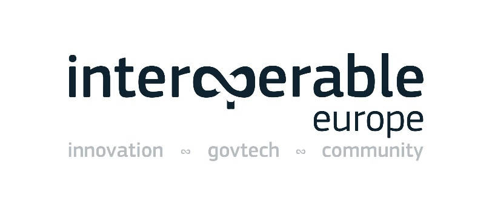

ISA2

Digital Public Administration factsheet 2021
France
 Table of Contents
Table of Contents2 Digital Public Administration Highlights 10
3 Digital Public Administration Political Communications 13
4 Digital Public Administration Legislation 22
5 Digital Public Administration Governance 30
6 Digital Public Administration Infrastructure 38
7 Cross-border Digital Public Administration Services for Citizens and Businesses 49
Please note that the data collection exercise for the update of the 2021 edition of the Digital Public Administration factsheets took place between March and June 2021. Therefore, the information contained in this document reflects this specific timeframe.

Country
Profile
1
Population: 67 248 926 inhabitants (2020)
GDP at market prices: 2 302 860 million Euro (2020)
GDP per inhabitant in PPS (Purchasing Power Standard EU 27=100): 103 (2020)
GDP growth rate: -7.9%
Inflation rate: 0.5%
Unemployment rate: 8%
General government gross debt (Percentage of GDP): 115.7 (2020)
General government deficit/surplus (Percentage of GDP): -9.2 (2020)
Area: 643 801 km2
Capital city: Paris
Official EU language: French
Currency: EUR
Source: Eurostat (last update: 28 June 2021)
The following graphs present data for the latest Digital Public Administration Indicators for France compared to the EU average. Statistical indicators in this section reflect those of Eurostat at the time the Edition is being prepared.
Percentage of individuals using the internet for interacting with public authorities in France
| Percentage of individuals using the internet for obtaining information from public authorities in France
| ||
Percentage of individuals using the internet for downloading official forms from public authorities in France
| Percentage of individuals using the internet for sending filled forms to public authorities in France
| ||
In 2017, the European Commission published the European Interoperability Framework (EIF) to give specific guidance on how to set up interoperable digital public services through a set of 47 recommendations. The picture below represents the three pillars of the EIF around which the EIF Monitoring Mechanism was built to evaluate the level of implementation of the EIF within the Member States. It is based on a set of 71 Key Performance Indicators (KPIs) clustered within the three main pillars of the EIF (Principles, Layers and Conceptual model), outlined below.

Source: European Interoperability Framework Monitoring Mechanism 2020
For each of the three pillars, a different scoreboard was created to breakdown the results into their main thematic areas (i.e. the 12 principles of interoperability, the interoperability layers and the components of the conceptual model). The thematic areas are evaluated on a scale from one to four, where one means a lower level of implementation and 4 means a higher level of implementation. The graphs below show the result of the second EIF Monitoring Mechanism data collection exercise for France in 2020.

Source: European Interoperability Framework Monitoring Mechanism 2020
France’s results in Scoreboard 1 show an overall good implementation of the EIF Principles, scoring above the European average for Principle 12 (Assessment of Effectiveness and Efficiency). Areas of improvements are concentrated in the Principles 3 (Transparency) and 7 (Inclusion and Accessibility) for which the scores of 3 and 2 respectively show a medium to upper-medium performance in the implementation of corresponding recommendations. Indeed, the internal visibility and provision of external interfaces for European public services (Principle 3 – Recommendation 5) and the accessibility of public services to all citizens, including persons with disabilities, the elderly and other disadvantaged groups (Principle 7 – Recommendation 14) could be improved in order to reach the maximum score of 4 in corresponding principles.

Source: European Interoperability Framework Monitoring Mechanism 2020
In spite of the lack of data for the interoperability layer related to the integration of public service governance, the French results for the implementation of interoperability layers assessed for Scoreboard 2 shows an overall good performance with scores of 3 and 4. Potential areas of improvement to foster the country’s implementation of the recommendations under Scoreboard 2 are concentrated in the areas of legal and governance interoperability. More specifically, the score of 1 for France in Recommendation 23, stating that relevant catalogues of standards, specifications and guidelines at national and EU level should be consulted when procuring and developing ICT solutions, lowers the overall interoperability governance result for France.

Source: European Interoperability Framework Monitoring Mechanism 2020
France’s scores assessing the Conceptual Model in Scoreboard 3 show a very good performance with a maximum score of 4 in the implementation of recommendations associated with internal and external information sources and services, base registries, catalogues, security and privacy, internal information sources and services, and open data. Although aligned with the EU average, there is still area for improvement regarding the implementation of the recommendations related to external information sources and services. More precisely, the use of external information sources when developing public services (External information sources and services - Recommendation 45) could be developed further, which would consequently improve the overall French score in Scoreboard 3.
Additional information on France’s results on the EIF Monitoring Mechanism is available online through interactive dashboards.
The graph below presents the main highlights of the latest eGovernment Benchmark Report, an assessment of eGovernment services in 36 countries: the 27 European Union Member States, as well as Iceland, Norway, Montenegro, the Republic of Serbia, Switzerland, Turkey, the United Kingdom, Albania and Macedonia (referred to as the EU27+).
The study evaluates online public services on four dimensions:
The 2021 report presents the biennial results, achieved over the past two years of measurement of all eight life events used to measure the above-mentioned key dimensions. More specifically, these life events are divided between six ‘Citizen life events’ (Career, Studying, Family life, measured in 2020, and Starting a small claim procedure, Moving, Owning a car, all measured in 2019) and two ‘Business life events’ (Business start-up, measured in 2020, and Regular business operations, measured in 2019).

Source: eGovernment Benchmark Report 2021 Country Factsheet

Digital Public Administration Highlights
2
Digital Public Administration Political Communications
In March 2021, the Ministry for Public Transformation and Civil Service presented its 400 days to accelerate the State’s digital transformation agenda. The plan targets three categories of stakeholders (end-users - both citizens and businesses, civil servants and democracy players) and is focused around three main challenges:
On 5 February 2021, the French government organised the 5th Interministerial Committee for Public transformation which reaffirmed France’s commitment to eGovernment:
In late 2020, the French government launched the France Relance recovery plan to help face and recover from the economic and sanitary consequences of the COVID-19 crisis and build the France of 2030. A EUR 1 billion envelope has been dedicated to the State and local authorities’ digital transformation over the 2020-2022 period to fund digital transformation initiatives (e.g. improvement of online procedures, data sharing between administrations, open data), offer civil servants better digital tools, accelerate cybersecurity and the implementation of digital identity, and foster the digital transformation of education.
Digital Public Administration Legislation
The Law for a State at the Service of a Society based on Trust was promulgated on 10 August 2018, establishing the principle of the right to error (in French droit à l’erreur) and including a series of measures to simplify administrative formalities.
The first part of the Law provides that French citizens who make a mistake in official declarations to the administration will not incur any penalty for the first error as long as it was made in good faith. It will be up to the administration to demonstrate the user's bad faith.
The second part of the Law gathers measures to simplify administrative formalities. To facilitate citizens' journeys, an experiment will be carried out appointing a single contact person who will be responsible for having the users' requests processed by the administrations concerned.
Digital Public Administration Governance
In July 2020, Amélie de Montchalin was appointed minister for Public Transformation and Civil Service. This newly created Ministry is responsible for the State's transformation policy and notably the promotion of actions to accelerate the State’s digital transformation.
Digital Public Administration Infrastructure
The Digital Identity Mission, conducted under the Tech.gouv programme, made considerable progress in 2020, notably with the continuous uptake of FranceConnect, France’s e-identification federation system, which counted over 21 million users in January 2021 and the launch of FranceConnect +. The French government pursued the elaboration of its renewed Cloud Strategy, to be officially published mid-2021. In 2020, the State-developed tools for civil servants (e.g. Tchap, the State’s instant messaging app, or WebConf, the state’s videoconferencing system) gained in usage and in popularity and were essential to the remote work of civil servants.

Digital Public Administration Political Communications
3
Berlin Declaration on Digital Society and Value-Based Digital Government
In December 2020, the French government signed the Berlin Declaration on Digital Society and Value-Based Digital Government, thus re-affirming its commitment – together with other EU Member States – to foster digital transformation in order to allow citizens and businesses to harness the benefits and opportunities offered by modern digital technologies. The Declaration aims to contribute to a value-based digital transformation by addressing and strengthening digital participation and digital inclusion in European societies.
Tech.gouv
On 16 April 2019 the French government launched Tech.gouv, a new programme led by the Inter-ministerial Directorate for Digital Affairs (DINUM) with the support of all Ministries which aims to speed up the digital transformation of public services. This agile and collaborative programme aims to help the State seize the opportunities offered by digital technologies to improve public services and bring the administration closer to citizens, businesses and civil servants. Tech.gouv addresses six priority issues: simplification, inclusion, attractiveness, command, economies and alliances. The strategy is structured around eight missions:
Tech.gouv is accompanied by a three-year action plan centred on 35 priority projects and actions.
National Strategy for an Inclusive Digital Society
In September 2018, the National Strategy for an Inclusive Digital Society and the initiative Digital in Common(s) were launched on the occasion of the first event bringing together all actors of digital mediation. The objective is to train 1.5 million people in digital literacy to reduce inequalities and provide equal opportunities for all throughout the country. With 13 million French people who still do not use the internet, or only to a limited extent, including 6.7 million who never connect to the internet, the government faces a real challenge to carry out the digital transformation of the State. The National Strategy is based on four main approaches:
Public Action 2022
The Public Action 2022 programme was launched in September 2017 by the French Prime Minister, Édouard Philippe, aiming to modernise the State. The programme has three objectives: improving the quality of public service provided to the user; improving the working conditions of staff; and helping to control the budget path. To achieve these objectives, the government developed a National Strategy for the Transformation of Public Action, published at the second Inter-ministerial Committee for Public Transformation in October 2018. The Strategy includes precise and quantifiable indicators to measure and report on the success of the programme. French citizens will thus be able to monitor the progress of the reforms. The ambition is to have a closer, simpler and more efficient State to better meet citizens' expectations, with transparency in monitoring being a guarantee of the success of reforms.
The National Strategy is based on four streams guiding the government's action:
A considerable part of the action in the field involves digital solutions, thus contributing to the promotion and development of digital government.
In June 2019, the Prime Minister launched the second part of the initiatives aiming at public transformation, inspired by citizens’ contributions to the Grand débat national, a public consultation conducted earlier in the year. This second part is centred on three priority commitments: a simpler and more responsive administrative organisation; closer and more accessible administrations; and a more efficient administration, able to leverage digital tools for the benefit of end-users, public servants and public policies.
This over-arching strategy has been implemented by each Ministry through Ministerial Transformation Plans that define the modalities for implementing major government reforms (milestones, achievements and impact indicators). The monitoring of the implementation of these reforms is carried out by the Inter-ministerial Directorate for Public Transformation with the Offices of the Prime Minister and the President of the Republic and takes the form of high-level follow-up meetings scheduled at regular intervals. Since the programme’s launch, five Inter-ministerial Committees for Public Transformation have been organised, the latest one having taken place in February 2021, with renewed commitments for the State’s digital transformation.
Ministerial Transformation Plans
Following the roadmap that the Prime Minister sent to each member of the government at the beginning of his term of office, each Minister has now drawn up a Ministerial Transformation Plan, for which he/she is responsible, to ensure the implementation of the main reforms. After the design and trade-off phase, the 2nd Inter-Ministerial Committee for the Transformation of Public Action (CITP) was introduced to accelerate the implementation of the Ministries' roadmaps and their Transformation Plans. These Plans are monitored at the highest level to ensure that the reforms undertaken are translated into concrete results. The ambition is to have a closer, simpler and more efficient State to better meet citizens' expectations.
Ministerial Digital Transformation Plans
As part of the Public Action 2022 initiative launched by the Prime Minister in October 2017, at the end of the same year the Minister for the Armed Forces defined a roadmap setting three objectives for the digital transformation of the Ministry:
This Ministerial Digital Transformation Plan was the first to be presented and sets out actions in a concrete way, as the Minister for the Armed Forces reminded: “After four months of work, we are now entering the action phase. This Plan offers concrete measures to fully achieve our objectives and address the digital transformation”.
At the same time, the education system is engaged in profound pedagogical and organisational transformations, from nursery schools to post-baccalaureate, requiring to thoroughly mobilise the potential of digital technology. Digital technology represents a powerful lever for transformation to support ministerial policy in all its dimensions: pedagogical transformation, with digital technology at the service of learning and evaluation; training in the challenges and professions of tomorrow; simplification of relations with users; and modernisation of the functioning of the State with redesigned information systems. In addition, today the Ministry of National Education produces a very large amount of data related to school life, student assessments and results, and work and homework performed by students. A wide variety of personal digital data is collected, stored and processed by a multitude of actors (schools and educational institutions, academic services, local authorities, and private partners providing educational resources and digital services). In this context, the Ministry must ensure that the flow, processing and storage of school data strictly respects the privacy of students and their families, teachers and administrative staff.
Digital Local Administration Joint Development Programme
The State Secretary for Digital Affairs launched the Digital Local Administration Joint Development Programme (DCANT) in 2018. The programme was co-created by associations of elected representatives and representatives of governmental services. It aimed at promoting the roadmap for regional digital transformation, as well as building complementary and efficient digital public services. The programme had four priorities:
Since the adoption of the programme, the actions linked to these priorities have been updated/enriched every six months and reviewed by a steering committee. A report on the final results of the DCANT Program was published in January 2021.
The programme’s objectives have mainly been reached and, to build on the several successes of the last two programme editions (2015-2017 and 2018-2020), a new programme will be launched in May 2021 and should pursue 3 main goals:
These objectives of the upcoming plan are set to increase the digital transformation of the State by building, together with citizens, private partners, public servants, and State and elected representatives, a collaborative digital administration that should be:
The results of the programme’s initiative will be followed by a coordination review steering committee. They will then be challenged and validated by the Ministry of Transformation and Public Service, the Minister of Territorial Cohesion and Relations with Local Bodies, and the State Secretary for Digital Affairs, every 6 months.
Government Roadmap for the Digital Economy
Following a workshop on the digital economy organised on 28 February 2013, the government presented the Government Roadmap for the Digital Economy. This strategy revolves around three pillars, namely: ‘Providing opportunities for youth’, ‘Reinforcing competitiveness’, and ‘Promoting French values in society’.
Providing opportunities for Youth
Four objectives were defined under this pillar:
Reinforcing competitiveness
Four objectives were defined under this pillar:
Promoting French values in society
Six objectives were defined under this pillar:
‘State Start-up’ Strategy
Since 2013 the State has been implementing a new innovation policy allowing State start-ups to be incubated to develop user-centric digital products that tackle public policy issues. The ‘State Start-up’ Strategy is a striking initiative for public services delivery, with an unprecedented approach to the conception of public services by small independent teams. Today, Beta.gouv, the network of State start-up incubators hosted by the Inter-Ministerial Directorate for Digital Affairs (DINUM), leads a growing community of members that build tomorrow’s digital public services within public sector incubators.
‘Tell Us Once’ Principle
Following the Law of 10 August 2018 for a State at the Service of a Society based on Trust, a decree published in the Official Journal of 20 January 2019 supplements the ‘Tell Us Once’ principle, providing that a user of the administration (individual or company) carrying out an action will no longer be obliged to provide certain information or supporting documents (e.g. reference tax income, proof of identity) if the information is already held by the administration services. Furthermore, a plan to speed up the implementation of the ‘Tell Us Once’ principle was announced at the latest Inter-ministerial Committee for Public Transformation in November 2019.
Demarches-simplifiees.fr
Since 1 March 2018, the demarches-simplifiees.fr platform has been allowing users to make online queries in record time and free of charge. As an eGovernment platform, demarche-simplifiee.fr offers public administrations a turnkey service to digitalise administrative procedures and as a result free themselves from paper forms. In three years, the platform enabled the digitisation of more than 5,000 administrative procedures and the filing of more than one million files. The platform is used by more than 750 entities, mainly State services and public bodies.
A study commissioned by the European Commission in July 2019 compared different forms of generation tools used by European payrolls, with demarches-simplifiées.fr, the only open-source solution, resulting the best.
No political communication has been published in this field to date.
Implementation of secure digital identity solutions
The French government has launched a programme to deploy a digital identification system. This new public service enables everyone, be they citizens, residents or legal entities, to prove their identity in a secure, ergonomic and accessible way, both in data exchanges related to administrative procedures and in more extensive uses, such as commercial transactions on the internet.
Information Campaign to Carry Out Administrative Procedures in Complete Safety
The objective of the National Information Campaign to Carry Out Administrative Procedures in Complete Safety is to enable French citizens to carry out administrative procedures in complete safety. Fake administration sites offer to carry out certain common administrative procedures for a fee (e.g. requests for birth certificates or criminal records, change of address, registration on the electoral rolls), while the same services are offered free of charge on the official websites of the administration (accessible from the website www.service-public.fr). Defrauded citizens suffer not only a financial loss, but also an intrusion into their private lives, as the use of these sites leads to access to sensitive personal data.
No political communication has been adopted in this field to date.
European Single Procurement Document
The European Single Procurement Document (ESPD or Document Unique de Marché Européen, DUME in French) was launched in France in 2018. The ESPD is a harmonised declaration of honour elaborated on the basis of a standard form drawn up by the European Commission, used in public procurement procedures by both public purchasers (contracting authorities/entities) and economic operators in the European Union.
The ESPD service solution allows the creation and filing of fully dematerialised ESPDs. In particular, the solution enables each public purchaser to precisely define the criteria for its tender, and each economic operator to meet the relevant criteria. In addition, the necessary certificates are automatically repatriated. Thanks to the ESPD service, the ESPD becomes a simplification tool for businesses and public buyers.
Public Procurement Digital Transformation Plan
In December 2017, the Public Procurement Digital Transformation Plan was adopted as a shared roadmap for the digitisation of public procurement for the period 2017–2022.
Governmental Roadmap ‘Digital and Environment, make the Transitions Converge’
In February 2021, the French government published the ‘Digital Technology and the Environment: Converging Transitions’ roadmap, which is composed of three pillars:
Some of the main measures include:
Public sector specific measures can be found under actions No. 1, 2, 11, 13 and 14. They include measures such as elaborating a methodology to quantify the environmental footprint of digital services, having a responsible digital services procurement strategy and putting data and innovation at the service of the environment.
Ma Santé 2022 Strategy
Announced in September 2018 by the President of the Republic, the Ma Santé 2022 Strategy provides an overall vision and global responses to the challenges facing the French health system. The first challenge are the inequalities in access to healthcare, with more and more French people experiencing difficulties in accessing a doctor during the day and sometimes being forced to go to the emergency room by default. The second challenge is the aspiration of professionals to cooperate better with each other, to have more time to care for their patients and to be trained in other ways.
‘School of Trust’ Project (Ecole de la Confiance)
The education system is engaged in profound pedagogical and organisational transformations, from nursery schools to post-baccalaureate, requiring to thoroughly mobilise the potential of digital technology. The ‘School of Trust’ Project represents a powerful lever for transformation to support ministerial policy in all its dimensions: pedagogical transformation, with digital technology at the service of learning and evaluation; training in the challenges and professions of tomorrow; simplification of relations with users; and modernisation of the functioning of the State with redesigned information systems.
Digital Criminal Procedure Programme
The Digital Criminal Procedure Programme pursues the work initiated by the prefiguration team composed of magistrates, clerks, police and gendarmerie officers. In particular, the Programme focuses on the capacity of law enforcement agencies and justice information systems to deal with a fully digital criminal procedure.
National Strategy for Artificial Intelligence
Following the publication of the Villani Report on Artificial Intelligence (AI), the government launched a National Strategy for Artificial Intelligence at the AI for Humanity Summit in 2018.
National Research Strategy for Artificial Intelligence
On 28 November 2018, the main points of the National Research Strategy for AI were presented. The Strategy will be financed by the State to the tune of EUR 665 million by 2022. The Strategy is largely based on research, that is the foundation of AI development. In this field, France already holds a recognised place thanks to its excellent mathematics and computer science schools. In this context, the objective of the Strategy is twofold:
Selection of AI Projects for the AI Lab
Since the announcement of the National Strategy for Artificial Intelligence, the Inter-ministerial Directorate for Digital Affairs (DINUM) and the Inter-ministerial Directorate for Public Transformation (DITP) have organised two calls for expression of interest to identify public sector AI projects:
Proposals were submitted by various administrations (central and decentralised bodies, operators, public institutions, rectors, universities, courts of laws, hospitals, etc.) and selected by a jury of experts. The selected projects were then passed to the AI Lab, hosted by the DINUM and the DITP, to be tested and developed over 10 months.
Cloud Strategy
The French Cloud strategy for administrations was made public in November 2018. It encourages the use of Cloud Computing based on an offer split into 2 parts:
On 17 May 2021, the French government presented an updated version of its Cloud Strategy. Cloud computing is one of the priority projects for the digital transformation of the French State. The French State Cloud strategy aims at encouraging public actors to seize the opportunities attached to the Cloud with the ultimate objective to provide a better public service to citizens, while at the same time keeping strict control over sensitive data.
The challenges are therefore at several levels:

Digital Public Administration Legislation
4
Law for a State at the Service of a Society based on Trust
The Law for a State at the Service of a Society based on Trust was promulgated on 10 August 2018, establishing the principle of the right to error (in French droit à l’erreur) and including a series of measures to simplify administrative formalities.
The first part of the Law provides that French citizens who make a mistake in official declarations to the administration will not incur any penalty for the first error as long as it was made in good faith. It will be up to the administration to demonstrate the user's bad faith.
The second part of the Law gathers measures to simplify administrative formalities. To facilitate citizens' journeys, an experiment will be carried out appointing a single contact person who will be responsible for having the users' requests processed by the administrations concerned.
Digital Bill
The Law for a Digital Republic or Digital Bill was promulgated on 7 October 2016, preparing the country for the challenges of the digital transition and the economy of tomorrow. In particular, the Law promotes innovation, and the development of the digital economy and an open, reliable digital society, while protecting the rights of citizens. It also aims to ensure access for all, in all territories, to all opportunities related to digital technology.
For the first time, the document was jointly prepared with internet users before being submitted for review, incorporating the contributions into the text.
In addition, the Decrees related to the Bill establish the following principles:
Ordinance on the Right of Users to Communicate with the Administration via Electronic Means
Ordinance No. 2014 - 1330 on the Right of Users to Communicate with the Administration via Electronic Means was adopted on 6 November 2014 by the French government. The Ordinance effectively defines the conditions and procedures for users to exercise the right to communicate electronically with the different administrations, in line with Ordinance No. 2013 - 1005 adopted on 12 November 2013, allowing for the simplification of the relation between the administration and users.
The former Secretary of State for Public Accounts and State Reform, Thierry Mandon, announced, at the Council of Ministers, 40 measures to be adopted by the government to simplify the lives of citizens. These measures are the result of the public consultations held between 9 July and 15 September 2014, with more than 2,000 proposals made by users. Many of the measures represent a great step forward for users, enabling services such as scheduling an appointment at the Institute for Family Allowance (Caisse d'allocations familiales - CAF) or applying for the social security card online, getting a personal medical certificate, paying fines via smartphone or purchasing stamps online.
All matters relevant to the relationship between users and the administration (central administration, regional governments and private legal entities having a public service mandate) are now regulated in one single code, namely the Code on the relationship between users and the administration (Code des relations entre le public et l’administration), which came into force on 1 January 2016.The Code deals with matters such as digital exchange, referral modalities of the administration, obligation of the administration to provide eServices to citizens (eProcedures, eForms, etc.), obligation of the administration to acknowledge receipt of digital referrals, etc. In addition, the Code contains the rules applicable to the exchange of information between administrations (Once-Only). Book III of the Code deals with the access to administrative documents and re-use of public information. Finally, the Code includes all new measures implemented by the Digital Republic and published on 27 October 2016.
Decree on the Exchange of Information and Data between Administrations within the Context of Administrative Procedures
The purpose of the Decree on the Exchange of Information and Data between Administrations within the Context of Administrative Procedures is to organise the exchange of information or data between administrations when this is necessary to process declarations or requests submitted by the public. In particular, the Decree determines the fields and procedures concerned by the exchange of information or data, the list of administrations by which the request for communication is made according to the type of information or data, the security and confidentiality criteria necessary to guarantee the quality and reliability of the exchange, as well as the retention period for information and data applicable to each exchange system. The text of the Decree is codified in the Code on the relationship between users and the administration (Code des relations entre le public et l’administration).
Ordinance on Electronic Interactions between Public Services Users and Public Authorities and among Public Authorities
The Ordinance on Electronic Interactions between Public Services Users and Public Authorities and among Public Authorities (Ordinance relative aux teleservices) was adopted on 8 December 2005 on the basis of the Legal Simplification Law of 9 December 2004. The Ordinance establishes a comprehensive legal framework for the shift to ‘electronic administration’, creating simple and secure electronic interactions between citizens and public authorities. The text covers all exchanges of electronic documents and emails or digital communications among public authorities, and between citizens and the central administration, regional governments and private organisations. Moreover, the Ordinance grants emails the same legal status as traditional paper-based correspondence and legalises the use of electronic signatures by public authorities. Lastly, the text stipulates the provisions on both the security of exchanges and the interoperability of information systems.
Decree on the Unified Command and Information System for Fire and Rescue Services and Civil Protection NexSIS 18-112
The Decree on the Unified Command and Information System for Fire and Rescue Services and Civil Protection was implemented in January 2019, providing for the establishment of a unified information and command system for fire, rescue and civil security services, called NexSIS 18-112. The system aims to provide a quality service for processing alerts received through emergency call numbers 18 and 112 and for the operational management of emergency resources; a national capacity to manage civil security and crisis management activities; interoperability with the information systems of public and private bodies contributing to civil security, in particular those competent for public security and health services; and functionalities to ensure the exchange, sharing and storage of data in accordance with confidentiality and security rules. The implementation and management of this information system falls within the scope of the missions of general interest entrusted to the Digital Agency for Civil Security (Agence du numérique de la sécurité civile).
Law on the Modalities of Reuse of Public Sector Information
The purpose of the Law on the Modalities of Reuse of Public Sector Information is to promote the reuse of public data. The text lays down the principle of free access for the opening and reuse of public data, known as ‘open data’. This principle applies to the State and local authorities. The Law limits the exceptions to the principle of free access, on the one hand, to public authorities required to release their resources, and, on the other, to the digitisation of cultural funds.
Law on Access to Administrative Documents
The Law on Access to Administrative Documents of 17 July 1978 grants everyone access to the administrative documents held by public bodies. All documents which are handed over are subject to copyright rules and cannot be reproduced for commercial purposes. Public bodies must respond to requests for documents within one month. A Commission of Access to Administrative Documents (CADA) is tasked with supervision. Before a complaint can be appealed to an administrative court, CADA must make a decision on the complaint.
Article 47 of the Disability Act of 2005
In September 2018, Article 47 of the Disability Act of 2005 was updated by Article 80 of the Act for a Professional Future to transpose the European Directive on digital accessibility of websites and mobile applications of public sector bodies into French law.
Law for a State at the Service of a Society based on Trust
In January 2019, two decrees finalised the implementation of the ‘Tell Us Once’ principle established by the Law for a State at the Service of a Society based on Trust. The purpose of this Law was to simplify the French administrative formalities based on two pillars: trust and simplicity; and aiming at all users – individuals or companies – in their daily dealings with administrations.
Published on 20 January 2018 in the Official Journal, the Decree on the Exchange of Information and Data between Administrations supplemented precisely the ‘Tell us once’ principle, one of the pillars of the Law, introducing a major change in relations between users and administrations: a user – individual or company – undertaking an administrative procedure is no longer required to provide certain information or supporting documents (e.g. reference tax income, proof of identity, certificate of rights issued by social security organisations) if the information is already held by the administration.
Law on Electronic Communications and Audio-visual Communication Services
Adopted on 9 July 2004 and amended on 8 August 2008, the Law on Electronic Communications and Audio-visual Communication Services transposes into French law the EU regulatory framework for electronic communications, namely: Directive 2002/21/EC (Framework Directive); 2002/20/EC (Authorisation Directive); 2002/19/EC (Access Directive); 2002/22/EC (Universal Service Directive); and 2002/58/EC (Privacy Directive). The transposition has been subsequently completed with the adoption of several decrees.
Law on Electronic Signature
The Law on Electronic Signature of 13 March 2000 was the first to grant legal value to electronic signatures and electronically-signed documents, transposing EU Directive 1999/93/EC on a Community framework for electronic signatures into French law. The Law was then complemented by an application decree issued on 30 March 2001, then abrogated by a new decree on 28 September 2017, following the adoption on 23 July 2014 of Regulation (EU) No. 910/2014 on electronic identification and trust services for electronic transactions in the internal market (repealing EU Directive 1999/93/EC).
Law for Trust in the Digital Economy
Adopted on 21 June 2004, the Law for Trust in the Digital Economy transposes EU Directive 2000/31/EC on electronic commerce and sets the legal framework for the development of eCommerce services in France. The Law was amended on 12 December 2018.
Law No. 2018-133 of 26 February 2018 on Various Provisions for Adapting to European Union Law in the field of Security
The Law on Various Provisions for Adapting to European Union Law in the field of Security was implemented in France on 26 February 2018. The Law contains a series of provisions to transpose Directive 2016/1148 of the European Parliament and of the Council of 6 July 2016 concerning measures for a common high-level of security of network and information systems across the Union.
Personal Data Protection Act
The Personal Data Protection Act was promulgated on 20 June 2018, adapting the Law on Informatics and Liberties of 6 January 1978 to the European data protection package. The package included the General Data Protection Regulation (GDPR), a regulation of 27 April 2016 directly applicable in all European countries as of 25 May 2018 and a directive dated the same day on criminal records, the so-called Police Directive.
Law on Informatics and Liberties
The Law on Informatics and Liberties was adopted on 6 January 1978, providing a legal framework for the use of identifiers in databases and the processing of personal data by public and private sector organisations. In addition, the Law created a National Commission for Informatics and Liberties (CNIL). The CNIL is in charge of overseeing the implementation and observance of the Law and had an advisory role in the planning of administrative data systems. The Law on Informatics and Liberties was amended by Law No. 2004-801 of 6 August 2004 implementing the EU Data Protection Directive (95/46/EC).
Vehicle Portal
According to the Law on Taxis and Chauffeured Cars, starting from February 2016 all registrations in the Vehicle Registry must be done through the new online Vehicle Portal.
Transport.data.gouv.fr
The delegated Commission Regulation (EU) 2017/1926 of 31 May 2017 supplementing Directive 2010/40/EU of the European Parliament and of the Council with regard to the provision of EU-wide multimodal travel information services stipulates that each Member State of the European Union shall set up a single national access point giving users access to static and dynamic travel and traffic data. Transport authorities, infrastructure managers, transport operators and providers of on-demand transport services are required to make available, through the access point, the data relating to their services and networks that are necessary for traveller information. Providers of travel information services may then re-use this data. As concerns France, the transport.data.gouv.fr website is the national access point referred to in Article 3 of the delegated Commission Regulation (EU) 2017/1926 of 31 May 2017 supplementing Directive 2010/40/EU of the European Parliament and of the Council with regard to the provision of EU-wide multimodal travel information services.
Commercial Code
The Commercial Code is the main company law in France, stipulating the most important requirements and rules for company organisation and structure. The French Commercial Code also refers to some rules in the Civil Code, and the Monetary and Financial Code. As far as company registration is concerned, the Act of 19 December 2002 establishes the obligations of all companies set up in France with regard to the French Registry of Commerce and Companies (Registre de commerce et des sociétés).
‘Tell-Us-Once’ Principle Programme
The ‘Tell-Us-Once’ Principle Programme was implemented along with a wide range of base registry initiatives launched by a number of strategies. In particular, the ‘Tell-Us-Once’ Principle (in French Dites-le-nous une fois) was an inter-ministerial programme launched at the Inter-ministerial Government Modernisation Council in 2012 which was designed to simplify and reduce the administrative burden on businesses by 2017. More in detail, the aim was to reduce the amount of redundant information that civil society was asked to provide by 50%.
French Public Procurement Code
On 1 April 2019, the first French Public Procurement Code entered into force, following the publication of Ordinance No. 2018-1074 dated 26 November 2018 about the legislative part of the Code and Decree No. 2018-1075 dated 3 December 2018 about the regulatory part of the Code.
The Code aims to modernise French regulations and finalise the transposition of the three European directives on public procurement and concessions dated 26 February 2014 (Directive 2014/24/EU, 2014/25/EU and 2014/23/EU), including, for instance, the eProcurement provisions relating to eAuctions and Dynamic Purchasing Systems.
Moreover, the Code aims at gathering the rules governing the award, performance, and termination of public procurement agreements − mainly public procurement contracts and concession agreements.
The Code is divided into three parts: (i) scope (defining the two main types of public procurement agreements); (ii) rules applicable to public procurement contracts (providing for the rules applicable to public procurement contracts, partnership contracts, public defence or security contracts, and some specific public procurement contracts); and (iii) rules applicable to concession agreements.
The codification process was also used to integrate some of the main principles of the public contracts case law into the written positive law and was carried out by integrating laws and regulations already in force.
eInvoicing Legislation
Ordinance No. 2014-697 of 26 June 2014 on the Development of Electronic Invoicing is the result of a codification process aimed, among other things, to integrate eInvoicing legislation. The Ordinance stipulates that economic operators involved in public procurement must submit electronic invoices and all public administrations must accept these invoices. The submission of electronic invoices is mandatory for all economic operators starting from 1 January 2020.
According to the 2020 Budget Law, business-to-business eInvoicing will start, on a gradual basis, from January 2023 and will be mandatory as of 1 January 2025, depending on the size of the company and the sector of activity.
Law on Programming 2018–2022 and on the Reform of Justice
The Law on Programming 2018–2022 and on the Reform of Justice was promulgated on 23 March 2019, providing for a 24% increase in the budget of the Ministry of Justice for the period 2018–2022. In this context, 6,500 jobs will be created and EUR 530 million will be spent on the Ministry's digital transformation. The text is structured around seven areas: simplification of civil procedure; reduction of the burden of administrative courts and increased efficiency of administrative justice; simplification and increased efficiency of criminal procedure; possibility of using digital criminal procedure; efficiency and meaning of penalties; diversification of the way juvenile offenders are dealt with and increased efficiency of the judicial system; and adaptation of the functioning of the courts.
Law on the Organisation and Transformation of the Healthcare System
The Law on the Organisation and Transformation of the Healthcare System entered into force on 24 July 2019, implementing the measures presented by the President of the Republic in his speech of 18 September 2018 on the My Health 2022 Plan.
The legislative initiative states that innovation and digital technology play a key role in the French healthcare system, advocating for the digital transformation of the healthcare system and caregiver practices.
More in detail, Article 12 allows users to open their digital health space by 1 January 2022 to access their shared medical file, as well as digital tools for secure exchanges with health professionals and institutions. This aimed to promote prevention by providing access to referenced and personalised health information, simplifying the preparation of hospitalisation and discharge, or even making it possible to evaluate individualised care journeys. The Article also provides that users may decide at any time to close their digital health space and specifies the conditions for destroying the data contained therein.
Law on the Growth and Transformation of Enterprises
On 22 May 2019, the Parliament adopted the Law on the Growth and Transformation of Enterprises launched by the Minister of Economy and Finance. This Law complements the regulatory and non-regulatory measures as well as tax measures that are incorporated into the 2019 Budget Law. All these measures make up the Action Plan for the Growth and Transformation of Enterprises (PACTE). The PACTE has two objectives: making companies grow so that they create more jobs and redefining the place of companies in society to better involve employees. From creation to transfer, the PACTE removes obstacles, simplifying business creation and easing workforce thresholds. In particular, entrepreneurs’ lives will be simplified thanks to the creation of a single online platform for business formalities. The PACTE is a new step in the country's economic transformation and the fourth phase of the economic reforms initiated by the government more than two years ago. The Action Plan is in line with ordinances for strengthening social dialogue and the tax reform initiated by the 2018 Budget Law. Moreover, the PACTE acts in parallel with the Law on the Freedom to Choose One's Professional Future to give small and medium-sized enterprises (SMEs) the means to create jobs. The PACTE is the result of a co-construction process initiated with companies, parliamentarians, and local authorities in October 2017. Following this first phase of consultation, companies, individuals, and professional federations were able to express their views in early 2018, during an online public consultation that gathered several thousand contributions and counted 65,000 votes.
No pieces of legislations in this field have been reported to date.

Digital Public Administration Governance
5
Ministry for Public Transformation and Civil Service
In France, the eGovernment strategy is under responsibility of the Prime Minister, Mr Castex and the Minister for Public Transformation and Civil Service, who is in charge of the coordination of all work on the modernisation and simplification of the State.
| Jean Castex Prime Minister
Contact details: Hôtel Matignon 57, rue de Varenne 75700 Paris SP 07 Tel.: (+33) 1 42 75 80 00 E-mail: N/A Source: http://www.gouvernement.fr |
| Amélie de Montchalin Minister for Public Transformation and Civil Service Contact details: Hôtel de Rothelin-Charolais, 101 rue de Grenelle, 75007 Paris E-mail: N/A Source: http://www.gouvernement.fr |
Inter-ministerial Directorate for Public Transformation (DITP)
The General Secretary for the Modernisation of Public Administration (SGMAP), operating from 2012 to 2017, was transformed into two new Inter-ministerial Directorates by Decree No. 2017-1584 of 20 November 2017:
The DITP supports Ministries and administrations in the public transformation of the State. The DITP coordinates the Public Action 2022 Programme and leads innovative interdepartmental projects. Furthermore, the DITP includes:
| Thierry Lambert Inter-ministerial Delegate for Public Transformation
Contact details: Direction Interministérielle de la Transformation Publique (DITP) 20 avenue de Ségur 75007 Paris Tel.: +33 1 53 18 76 25 E-mail: sec.sgmap@modernisation.gouv.fr Source: http://www.modernisation.gouv.fr |
Inter-ministerial Directorate for Digital Affairs
The Inter-Ministerial Directorate for Digital Affairs (DINUM), which succeeded the Inter-Ministerial Directorate for Digital Affairs and State Information and Communication System (DINSIC) in 2019, is a Prime Minister’s service, under the authority of the Ministry for Public Action and Accounts and at the disposal of the Ministry of the Economy and Finance, and of the State Secretary for Digital Affairs.
DINUM is in charge of directing, leading, supporting and coordinating public administrations’ actions aiming at enhancing the quality, efficiency and reliability of the services provided by the State's information and communication system. Furthermore, DINUM supports the Ministries’ digital transformations, secures major projects, advises the government and develops services and shared resources such as the Inter-ministerial State Network (RIE), FranceConnect and api.gouv.fr. The Inter-Ministerial Directorate encompasses all eGovernment-related issues and plays a key role in coordinating the actions of the Ministerial Directorates for Digital Affairs.
| Nadi Bou Hanna Inter-ministerial Director for Digital Affairs Contact details: 20 avenue de Ségur Tel.: +33 1 40 15 72 60 E-mail: dinsic-sec.sgmap@modernisation.gouv.fr Source: https://lannuaire.service-public.fr/gouvernement/administration-centrale-ou-ministere_194230 |
Inter-ministerial Directorate for Public Transformation
The Inter-ministerial Directorate for Public Transformation (DITP) coordinates the Public Action 2022 Programme in collaboration with the Ministries. Driven by a new vision for the transformation of public action, the DITP supports inter-ministerial projects or accompanies ministerial projects with a high impact. As an accelerator of public transformation, the DITP provides expertise so that administrations and their agents become entrepreneurs in their transformation. In other words, the DITP helps administrations imagine new solutions, move beyond the framework, unleash public energy, transform public action and build a more efficient, fairer public service, better adapted to users' needs. Putting the user at the centre, unleashing the capacity for action and creativity of managers and agents, keeping things simple, being transparent about results and ensuring trust are the commitments of the Inter-ministerial Directorate.
Inter-ministerial Directorate for Digital Affairs
The Inter-Ministerial Directorate for Digital Affairs (DINUM) is a Prime Minister service, under the authority of the Ministry for Public Action and Accounts and at the disposal of the Ministry of the Economy and Finance, and of the State Secretary for Digital Affairs.
DINUM is in charge of directing, leading, supporting, coordinating and implementing public administrations’ actions aiming at enhancing the quality, efficiency and reliability of the services provided by the State's information and communication system. Furthermore, DINUM supports the Ministries’ digital transformations, secures major projects, advises the government, develops services and shared resources, and plays a key role in the implementation of eGovernment projects.
All Central Government Departments
Central Government Ministries deal with the implementation of eGovernment projects placed within their respective jurisdiction.
National Digital Council
The National Digital Council (Conseil National du Numérique, CNNum) is an advisory body created on 27 April 2011 by the President and consisting of thirty experts (ten members representing the digital economy, ten members from the research community and ten members taking part in the development of digital technology in society). The CNNum is tasked with advising the government on issues related to digital technology. More specifically, the CNNum is consulted for advice on ‘any proposed law or regulation that may have an impact on the digital economy, so that the government can have insight from the industry’. Nevertheless, the CNNum can also make recommendations on issues of interest without a previous request by the government.
French Network and Information Security Agency
The French Network and Information Security Agency (Agence Nationale de la Sécurité des Systèmes d’Information, ANSSI) was established by a decree issued on 8 July 2009. The Agency is placed under the authority of the Prime Minister and is attached to the Secretary General for Defence and National Security, replacing the Central Directorate for Information System Security (DCSSI). Compared to the DCSSI, the ANSSI is assigned wider missions and resources, namely: detection of and prompt reaction to cyber-attacks; continuous surveillance of sensitive governmental networks; implementation of appropriate defence mechanisms; prevention of threats through trusted products and services by French operators; advise and support to governmental entities and operators of critical infrastructure; and continuous information on security threats.
Directorate of Legal and Administrative Information
The Directorate of Legal and Administrative Information (DILA) is part of the Prime Minister’s Office and is placed under the authority of the Secretary General of the Government. DILA is tasked with law dissemination, public edition, and administrative information. More specifically, DILA publishes the following: the official website of the French administration; the website of law dissemination; the website of the Official Gazette of the French Republic; the website of public debate and public edition; the website of the Official Bulletin of Public Procurement Notices (Bulletin officiel des annonces des marchés publics, BOAMP); and the website of the Official Bulletin of Civil and Commercial Notices (Bulletin officiel des annonces civiles et commerciales, BODACC).
Public Interest Group ‘Modernisation of Social Declarations’
The Public Interest Group ‘Modernisation of Social Declarations’ (GIP-MDS) gathers the different social security institutions and business federations to develop joint services enabling businesses to file their social declarations electronically. These services are accessible through the Net-Enterprises website.
Inter-Ministerial Directorate for Digital Affairs
The Inter-Ministerial Directorate for Digital Affairs (DINUM), which succeeded the Inter-Ministerial Directorate for Digital Affairs and State Information and Communication System (DINSIC) in 2019, is a Prime Minister’s service, under the authority of the Ministry for Public Action and Accounts and at the disposal of the Ministry of the Economy and Finance, and of the State Secretary for Digital Affairs. DINUM is in charge of directing, leading, supporting, coordinating and implementing public administrations’ actions regarding interoperability activities.
Ministry of Justice
The Ministry of Justice takes care of the Criminal Record Registry, handling personal data for natural and legal persons.
Ministry of Ecological and Solidarity Transition
The Ministry of Ecological and Solidarity Transition provides the Registry for Chauffeured Cars (online Vehicle Portal), dealing with vehicles’ data.
Info-Greffe
Info-Greffe provides legal and economic information on business companies on behalf of all registries of all French commercial courts. More in detail, Info-Greffe's mission is to facilitate access to its services and to dematerialise the main procedures and dealings with registrars. The information provided has legal validity. Since 2009 Info-Greffe has also been handling the Business Registry, dealing with business data.
Ministry of the Economy and Finance
The Land and Tax Registries belong to the Ministry of the Economy and Finance, handling land, parcels and tax data.
National Institute for Statistics and Economic Studies
The National Institute for Statistics and Economic Studies (INSEE) produces and manages the SIRENE Registry, dealing with the identification of businesses.
Court of Accounts
The responsibilities of the French Court of Accounts (Cour des Comptes) cover mandatory and optional examinations of the use of public funds.
Finance Committees of the Parliament
The use of public funds is also scrutinised by the Finance Committees of both the National Assembly and the Senate.
National Commission for Informatics and Liberties
The National Commission for Informatics and Liberties (CNIL), the French Data Protection Authority, was created by the Law on Informatics and Liberties of 6 January 1978, providing a legal framework for the use of identifiers in databases and the processing of personal data by public and private sector organisations. The CNIL is an independent body in charge of overseeing the implementation of the above-mentioned Law and also has an advisory role in planning administrative data systems.
French Network and Information Security Agency (ANSSI)
The French Network and Information Security Agency (Agence Nationale de la Sécurité des Systèmes d’Information, ANSSI) was established by a decree issued on 8 July 2009. The Agency is placed under the authority of the Prime Minister and is attached to the Secretary General for Defence and National Security, replacing the Central Directorate for Information System Security (DCSSI). Compared to the DCSSI, the ANSSI is assigned wider missions and resources, namely: detection of and prompt reaction to cyber-attacks; continuous surveillance of sensitive governmental networks; implementation of appropriate defence mechanisms; prevention of threats through trusted products and services by French operators; advise and support to governmental entities and operators of critical infrastructure; and continuous information on security threats.
Computer Security Incident Report Team
The Computer Security Incident Report Team (Centre d'Expertise Gouvernemental de Réponse et de Traitement des Attaques informatiques, CERTA) is the point of contact for all computer-related security incidents regarding France.
Regional and Local Administrations
Regional and local government bodies (regions, counties and municipalities) devise their eGovernment policy in compliance with the national eGovernment policy, within the remits of their competences.
Concerted Development of Territorial Digital Transformation Programme
The Concerted Development of Territorial Digital Transformation (DCANT) Programme aims to become the roadmap for regional digital transformation. the Programme is co-authored by associations of elected representatives and representatives of State services with the purpose of building complementary and efficient digital public services.
Regional Agencies for ICT
In some regions, dedicated ICT Agencies participate in the coordination of regional eGovernment projects.
Regional and Local Administrations
Regional and local government bodies implement eGovernment projects falling within their respective areas of competence.
Caisse des Dépôts
The Caisse des Dépôts is a State-owned financial institution that performs public-interest missions on behalf of France's central, regional and local governments.
National Agency for Territorial Cohesion
The National Agency for Territorial Cohesion (ANCT) was established at the beginning of 2020 and is the result of the merger of the General Commission for Territorial Equality (CGET), Epareca and the Agency for Digital Affairs. The ANCT is a new partner for local governments, tightening links between the State and local governments to help the latter succeed in their projects. The ANCT can facilitate the implementation of various types of projects, including broadband coverage and WiFi installation in public places, and carries out various national programmes, some of which related, for instance, to digital inclusion issues.
National Centre for the Management of Territorial Service
The National Centre for the Management of Territorial Service (Centre National de la Fonction Publique Territoriale, CNFPT) is at the heart of decentralisation. Through its core missions of agent training and career support of executives, the CNFPT aims to modernise the local public service.
CAP-TIC
CAP-TIC is a company created in February 2000 by the Caisse des Dépôts, which provides technical, economic, pedagogical, and legal services to public sector organisations.
Internet Cities Association
The Internet Cities (Villes Internet) Association is a network of elected officials, local civil servants, and private and voluntary stakeholders, aimed at supporting the exchange of experience and practice for the development of the internet and internet-based citizen services at local level.
The Internet Cities Association meets once a year and is the national label given to local governments implementing local digital public policy. Since 2015, the label for the promotion of citizen internet has been directed to internet territories, cities and villages. The Association also offers a Geolocation Mapping Portal that lists and presents the services offered by local actors in connection with citizen internet.
No responsible organisations have been reported to date.
No responsible organisations have been reported to date.
Regional Courts of Accounts
The Regional Courts of Accounts are tasked with examining the use of public funds by public authorities.
National Commission on Information Technology and Liberties
The National Commission for Informatics and Liberties (Commission Nationale de l’Informatique e des Libertés, CNIL) is an independent French administrative regulatory body whose mission is to ensure that data privacy law is applied to the collection, storage and use of personal data.

Digital Public Administration Infrastructure
6
‘Tell-Us-Once’ Principle: Continuous Enhancement of the API Catalogue
DINUM created a unique point of entry to have access to all public APIs. This catalogue of APIs is primarily intended for service creators and API consumers and aims to facilitate the discovery and understanding of APIs, and the access to APIs and their producers. At the same time, the catalogue enables suppliers to easily publicise their APIs.
Administrations often consume several APIs (from different producers) to implement a teleservice or a new approach. The use of an interdepartmental tool allows them to ensure consistency in the authorisation procedure and centralise their requests.
To facilitate the lives of data providers, DINUM developed a specific tool to manage the authorisation phase, called ‘DataPass’. Furthermore, DINUM created two API hubs, namely API Enterprise and API Particulier.
DataPass
The DINUM worked on setting up a common legal framework to harmonise and streamline relations between data providers and service providers through the construction of DataPass, a tool facilitating the connection between suppliers and consumers. This tool is intended for stakeholders (e.g. public administrations) who wish to use personal data. DataPass delivers authorisations through a simple, standardised and compliant process, to access all protected data produced by the State.
For the stakeholders requesting access to data, DataPass contains the following features:
For the data controller:
API Entreprise
Digital technology enables the pre-filling and digitisation of administrative forms that businesses are required to complete, in particular to enable the exchange of information between the different departments and agencies. Since 2014 two projects have been running in the framework of the inter-ministerial programme.
Public administrations can access this information through APIs (API Entreprise) that provide information from different base registries. The base registries that are made available through the APIs are:
The API Enterprise hub aims to centralise company information owned by French administrations (General Directorate of Public Finance, Companies Register, Associations Register, etc.) to help administrative service providers to develop simplified online procedures, e.g. public procurement applications or requests for public subsidies. DINUM performs the technical interfacing with the different APIs within standards that are up-to-date with industrial constraints. Public service providers just have to deal with a single account and a single contact to access multiple data to develop online public services.
API Particulier
The API Particulier hub aims to centralise personal data owned by French administrations (National Family Allowance Fund, General Directorate of Public Finance, etc.) to help administrative service providers (administrations, cities, departments, etc.) to develop simplified and improved online procedures. DINUM performs the technical interfacing with the different APIs within standards that are up-to-date with industrial constraints. Public service providers just have to deal with a single account and a single contact to access multiple data to develop online public services.
For instance, the API hub helps administrations to simplify and improve administrative online processes such as scholarship applications. In this case, families’ incomes were directly retrieved from tax centres. In September 2018, the French administration received 650,000 successful calls, corresponding to as many supporting documents that did not need to be produced. This saves time for families: in the past, some parents had to take half a day off work to submit their applications, others to ask their children to queue during recess. Today, to replace a supporting document with a call to API Particulier users must still enter specific information to the administration, such as tax number or beneficiary number. The French administration would like users to be able to identify themselves more easily through FranceConnect. Thus, with a single login and password, the API hub would allow everyone to simplify their procedures.
State as a Platform
The Inter-ministerial Directorate for Information Systems built the foundations of the Etat plateforme (State as a Platform), i.e. an architecture supporting the creation of a new kind of digital public services. This State information system transforming strategy presupposes that the administration itself gathers user data in one place to offer almost ready-to-use services. The aim is to centre services on needs, rather than on the organisation of administrative structures. The main principles of the State as a Platform are the opening of APIs by large public providers of data, the flow of data between administrations, and flow control by users through FranceConnect, i.e. the French identification system (Single Sign-On).
ePassports
In April 2006, the Ministry of Interior announced the calendar for the introduction of the first electronic passports in France, progressively introduced between April and July 2006. Embedded with a contact-less chip, the French ePassport contains the digitalised photograph of its owner. ePassports are intended to be more than a simple travel document and in the future could be used for the fulfilment of administrative formalities. On 28 June 2009, electronic passports were replaced by biometric passports containing also the holder’s digitised fingerprints.
FranceConnect
The Inter-ministerial Directorate for Digital Affairs is currently building the FranceConnect Platform, a Single Sign-On (SSO) solution providing users with an identification mechanism recognised by all digital public services available in France and by 30 private organisations (banks, insurance, utilities, etc.). FranceConnect does not aim to replace the various suppliers of public identities, but federates the accounts already created by users, such as tax, social security and Post Office. FranceConnect will allow France to implement the European eIDAS Regulation (Electronic Identification and Signature), requiring the interoperability of identification systems used by Member States to access their online services. The process of pre-notification of the French identity scheme FranceConnect + and L’identité numérique La Poste was launched on March 2021. FranceConnect was launched in June 2016 and counts 21 million users as of January 2021. By May 2021, FranceConnect + will federate eIdentities with a substantial level of assurance for even more secured online services.
WorkInFrance.gouv.fr
WorkInFrance is a platform for requesting temporary work permits for foreign students. As a transparent public service adapted to the needs of companies, WorkInFrance simplifies the work authorisation process for students on apprenticeship contracts, professionalisation contracts and medical interns, and for Algerian students subject to the Franco-Algerian agreement of 27 December 1968. On the platform, users (company or employee) will find an interface where they can submit their request and find information on the status of their request.
Mesdroitssociaux.fr
Mesdroitssociaux.gouv.fr offers a new digital service centralising information about insured persons and facilitating the procedures to be undertaken with social protection bodies. More in detail, Mesdroitssociaux.fr:
The site is continuously evolving and in 2019 some new features were introduced. For instance, the site now enables to use the multi-service simulator without entering FranceConnect IDs, to view activity bonus rights for the last 12 months and to find out if the user can benefit from the individual bonus introduced on 1 January 2019.
Service-Public.fr
Service-Public.fr was launched in October 2000, giving access to practical information focused on daily-life events for public service users. More specifically, the portal guides citizens to the services enabling them to know their obligations, exercise their rights and carry out their administrative procedures. Service-Public.fr is the official website of the French administration, i.e. the single portal for administrative information and access to online services, published by the Directorate of Legal and Administrative Information (DILA) in partnership with national and local administrations.
Data.gouv.fr
Data.gouv.fr is an open data portal maintained by the French government. The portal can host or reference datasets produced by administrations, corporations, citizens or non-profit organisations. On data.gouv.fr, anyone can publish or comment a dataset, or publish a reuse.
Mes-aides.fr
Mes-aides.fr is a digital public service State start-up produced in an unprecedented construction approach by a small independent team and supported by a community of public officials and citizens. The site mes-aides makes use of the free software simulation of the French tax-benefit system OpenFisca. In the context of the COVID-19 pandemic, multiple dashboards were designed.
Observatoire.numerique.gouv.fr
Since June 2019, the Inter-ministerial Directorate for Digital Affairs (DINUM) has been tracking the usability and user experience of the 250 most used public services in France. The project helps the French administration prioritise the product roadmap of those services and work with the different administrations on the continued improvement of their services.
DINUM quantifies the quality of the user experience via a series of criteria, including mobile responsiveness, the Once-Only principle, user satisfaction, speed and performance and accessibility for people with disabilities. Data are accessible to anyone via the platform as open data and are updated every quarter.
To calculate the satisfaction index, DINUM asked the administrations to add a feedback button at the end of each service (the ‘Je donne mon avis’ button). The button was very easy to add, with just one line of code needed. As of March 2021, 3,000,000 users had given feedback. The ‘je donne mon avis’ (I give my opinion) button is featured in 70% of the most used services.
Demarches-simplifiees.fr
Since 1 March 2018, the demarches-simplifiees.fr website has been allowing French citizens to make online queries in record time and free of charge. As a dematerialisation platform, demarche-simplifiee.fr offers administrations a turnkey service to digitalise administrative procedures and as a result free themselves from paper forms.
In two years, the platform enabled the digitisation of more than 5,000 administrative procedures and the filing of more than 2.5 million files. The platform is used by more than 750 public bodies, mainly State services and public bodies.
A study commissioned by the European Commission in July 2019 compared different forms of generation tools used by European payrolls, with demarches-simplifiees.fr, the only open-source solution, resulting the best. The Commission plans to expand its use to other European countries.
Business Creation Portals
The guichet-entreprises.fr and guichet-qualifications.fr portals form the online point of single contact for business creation recognised by the European Commission, implementing Directive 2006/123/CE of the European Parliament and of the Council of December of 12 December 2006 on services in the internal market and Directive 2005/36/CE of the European Parliament and of the Council of 7 September 2005 on the recognition of professional qualifications. More in detail:
The Guichet Enterprises service, operating both portals, is part of the EUGO Network.
Beta.gouv.fr
Beta.gouv.fr is a digital services incubator forming part of the mission of the Inter-ministerial Directorate for Digital Affairs (DINUM). More specifically, beta.gouv.fr incubates State start-ups with a 4-phase process:
Current State start-ups include, for example, employment and transportation data websites, and environmental protection programmes.
France Num
The France Num portal was launched on 15 October 2015 and is maintained by the General Directorate for Companies (DGC) of the Ministry of the Economy and Finance. France Num aims to promote the digital transformation of SMEs and Very Small Businesses (VSBs). In particular, the portal allows companies to find funding for their digital projects, receive advice from experts and have an easy access to governmental and local digital services for businesses. France Num also plays a key role in building a communauté des activateurs, i.e. a network of digital experts supporting France’s digital transformation.
Tribunaldigital.fr
The tribunaldigital.fr portal gives online access to France’s 134 commercial courts. Companies can access their files and personal data as well as follow the progress of an ongoing case. The portal also allows users to have an easy access to public services, including seizing the local jurisdiction, collecting/paying a debt, seeking help in case of a cash crisis and filing an application before a bankruptcy judge.
Health Data Hub
The aim of the Health Data Hub, a platform for health data launched in 2019, is to promote the use of and increase the possibilities for exploiting health data, particularly in the fields of research, support to healthcare personnel, health systems management, and monitoring and informing patients. In this context, the Hub will enable the development of new techniques, notably those related to artificial intelligence methodologies, and will have a role in promoting innovation in the use of health data.
National Agency for Secured Documents websites
The National Agency for Secured Documents (ANTS) manages several websites:
No particular infrastructure in this field has been reported to date.
Inter-ministerial Network of the State
The Inter-ministerial Network of the State (Réseau Interministériel de l’Etat, RIE) is a shared network carrying out data exchanges within each Ministry and between Ministries. It is a key project in the modernisation of the State’s information system and, by extension, of public action in France, promoting and securing exchanges of data between administrations at the service of eGovernment. As of 1 January 2020, more than 13,000 sites were interconnected, with a target of 14,000 sites in 2022 as the French army will rally. The Network is enriched with secure internet browsing services and more services will be added by 2022.
The key aims of the RIE are the following:
Secure Inter-ministerial Intranet for Governmental Synergies
The Secure Inter-ministerial Intranet for Governmental Synergies (ISIS) has been operational since November 2007 and allows for the exchange and sharing of top-secret information among government actors. The ISIS is part of the French Network and Information Security Agency (Agence Nationale de la Sécurité des Systèmes d’Information - ANSSI).
Trans European Services for Telematics between Administrations
France uses the Trans European Services for Telematics between Administrations (TESTA) network as the main cross border infrastructure to communicate digitally among the EU agencies, institutions and Member States.
No particular infrastructure in this field has been reported to date.
FranceConnect
FranceConnect allows each individual to connect to the various online services by public administrations offering the icon on their site by using one of the ‘digital identities’ partners:
Since 23 January 2018, FranceConnect’s authentication page for individuals has had the FranceConnect icon. For all online processes on impots.gouv.fr, users benefit from a new way of connecting with FranceConnect using the digital identity of their choice.
Common eSignature solution
The electronic services provided online to citizens and enterprises via the portal Service Public are supported by one common electronic signature solution. Only the electronic certificates provided by qualified Certification Service Providers (CSPs) are eligible for the online interactions of citizens and businesses with the government. To be recognised as such, certificates are evaluated against the requirements of the General Security Framework. Three levels of security are provided, namely: medium, high and qualified. The electronic certificates for businesses are issued to natural persons, but are only to be used on behalf of an enterprise.
State as a Platform
The Inter-ministerial Directorate for Information Systems built the foundations of the Etat plateforme (State as a Platform), i.e. an architecture supporting the creation of a new kind of digital public services. This State information system transforming strategy presupposes that the administration itself gathers the various user data which are necessary for its purposes and offers in return almost ready-to-use services. The aim is to centre services on needs, rather than on the organisation of administrative structures. The main principles of the State as a Platform are the opening of APIs by large public providers of data, the flow of data between administrations, and flow control by users through FranceConnect.
ePassports
In April 2006, the Ministry of Interior announced the calendar for the introduction of the first electronic passports in France, progressively introduced between April and July 2006. Embedded with a contact-less chip, the French ePassport contains the digitalised photograph of its owner. ePassports are intended to be more than a simple travel document and in the future could be used for the fulfilment of administrative formalities. On 28 June 2009, electronic passports were replaced by biometric passports containing in addition the holder’s digitised fingerprints.
Tchap
In 2019 the government launched Tchap, i.e. its own instant messaging app created specifically for public officials to allow them to easily and securely communicate with their colleagues and partners. Tchap is based on an open-source software (Riot) and open standard (Matrix), is operated by the State and is hosted on French servers. The app guarantees the confidentiality and security of exchanges through end-to-end encryption. The service is available both on computers and mobile devices and offers unique features such as a user directory. As of March 2020, over 120,000 public officials have been using Tchap to communicate.
timbres.impots.gouv.fr
The new timbres.impots.gouv.fr service allows the purchase of fiscal stamps. Electronic stamps are used to pay the rights for some administrative formalities.
eProcurement Platform (PLACE)
Since 1 January 2020 public contracts equal to or greater than EUR 40,000 (excluding taxes) must be awarded electronically. Previously, starting from 1 October 2018, the threshold had been set to EUR 25,000. This obligation covers:
All government departments meet this requirement using the government-wide eProcurement Platform (PLACE). The Platform allows public sector organisations to post tenders online and receive electronic tenders from businesses (which can consult the tenders online). The Platform is offered by the DAE, an interdepartmental service dedicated to improving the efficiency of public procurement.
Local authorities have their own electronic procurement solutions at regional and local level.
Official Bulletin of Public Procurement Notices
The Official Bulletin of Public Procurement Notices website (Boamp.fr) provides an online version of the Official Bulletin of Public Procurement Notices. The website is managed by the Directorate of Legal and Administrative Information (DILA).
Boamp.fr publishes national and European public tender notices, concession notices and award notices, but also public-private partnership contracts and various notices issued by the State, the army, local authorities and their public establishments.
eMarketplace of the Burgundy region
The eMarketplace Portal gathers more than 2,000 public authorities and institutions in the administrative region of Burgundy, in the east of France, and is accessible from the Burgundy eGovernment Portal. Through the Portal, public bodies can post calls for tenders that potential suppliers can access and respond to. This eMarketplace was piloted with the support of the French government as part of France’s ADELE plan for eGovernment and was launched as an operational service at the beginning of 2005. After a successful regional experimentation, Burgundy created a consortium made up of five regional authorities of EU countries, along with public and private partners, to put in place the eTENProcure Project. The Project aims at enabling, across the five pilot regions, electronic bidding for public procurement through safe and intuitive web services for SMEs.
Electronic invoicing requires a system that guarantees the authenticity and legibility of the invoice, and the integrity of its content. The French Agency for the State Financial Information Systems (AIFE) has developed and made available for free a shared technical solution called Chorus Pro.
Chorus Pro is a portal for electronic invoicing for companies, government suppliers and public entities enabling public officials to accept and issue dematerialised invoices and, thus, suppliers to send their invoices to State services.
More in detail, this portal enables to issue and monitor all annual invoices for the State, the local public sector (including hospital services) and public institutions. The solution takes into account the diversity of public and private entities and offers a choice of transmission and reception methods.
Chorus Pro aims to:
Finally, the portal manages subcontractors and co-contractors’ payment requests, as well as the exchange of documents related to the execution of works contracts.
PayFiP
Since mid-October 2018, the General Directorate of Public Finance (DGFiP) has been providing public authorities and users with an enhanced, secure and modern online payment service called PayFiP. PayFiP allows for the payment by bank deposit of invoices issued by local authorities and public bodies (the State, local authorities, hospitals, etc.).
references.modernisation.gouv.fr
The references.modernisation.gouv.fr website contains links to the latest version of the eGovernment policy reference documents aimed at public authorities, namely: General Accessibility Framework (RGAA); General Security Framework (RGS); General Interoperability Framework (RGI); and Charter for the Ergonomics of Public Websites.
Adullact.Net
In June 2005, an open-source software repository and collaborative platform for cooperative software development for the use of the entire French administration was launched under the name of Admisource. Since July 2008, Admisource has been merged with Adullact.Net, a platform developed by the Association of Developers and Users of Free Software for Administrations and Regional/Local Governments.
Awareness Kit
The first part of the Awareness Kit (Kit de sensibilisation) was produced by Cybermalveillance.gouv.fr and its members, raising awareness on digital security issues, sharing best practices and improving business use.
Cleiss
Cleiss is the liaison body between French social security institutions and foreign counterparts for the implementation of European regulations and bilateral or multilateral social security agreements.
Campus France Platform
The Campus France Platform provides information as regards study programmes in France. More in detail, the Platform offers information about the different programmes available in France and the possibilities of obtaining a scholarship and explains where to find Campus France near a specific location.
National Address Base Registry
DINUM and the National Institute of Geographic and Forest Information (IGN) developed and launched on 1 January 2020 the National Address Base Registry, an open-source database gathering information on all geographical addresses on the French national territory.
Registry for Chauffeured Cars
The Ministry of Ecological and Solidarity Transition provides the Registry for Chauffeured Cars (online Vehicle Portal), dealing with vehicles’ data.
Business Registry
Since 2009, the Business Registry, dealing with business data, has been handled by Info-Greffe.
Tax Registries
The Land and Tax Registries belong to the Ministry of the Economy and Finance, handling land, parcels and tax data.
SIRENE Registry
The National Institute for Statistics and Economic Studies (INSEE) produces and manages the SIRENE Registry for businesses identification.
No particular infrastructure in this field has been reported to date.

Cross-border
Digital Public Administration Services
7
Further to the information on national digital public services provided in the previous chapters, this final chapter presents an overview of the basic cross-border public services provided to citizens and businesses in other European countries. Your Europe is taken as reference, as it is the EU one-stop shop which aims to simplify the life of both citizens and businesses by avoiding unnecessary inconvenience and red tape in regard to ‘life and travel’, as well as ‘doing business’ abroad. In order to do so, Your Europe offers information on basic rights under EU law, but also on how these rights are implemented in each individual country (where information has been provided by the national authorities). Free email or telephone contact with EU assistance services, to get more personalised or detailed help and advice is also available.
Please note that, in most cases, the EU rights described in Your Europe apply to all EU member countries plus Iceland, Liechtenstein and Norway, and sometimes to Switzerland. Information on Your Europe is provided by the relevant departments of the European Commission and complemented by content provided by the authorities of every country it covers. As the website consists of two sections - one for citizens and one for businesses, both managed by DG Internal Market, Industry, Entrepreneurship and SMEs (DG GROW) - below the main groups of services for each section are listed.
For citizens, the following groups of services can be found on the website:
Regarding businesses, the groups of services on the website concern:
last update: October 2021
The Digital Public Administration Factsheets
The factsheets present an overview of the state and progress of Digital Public Administration and Interoperability within European countries.
The factsheets are published on the Joinup platform, which is a joint initiative by the Directorate General for Informatics (DG DIGIT) and the Directorate General for Communications Networks, Content & Technology (DG CONNECT). This factsheet received valuable contribution from Albane Sautory and Catherine Ferréol (Inter-Ministerial Directorate for Digital Affairs).
 The Digital Public Administration Factsheets are prepared for the European Commission by Wavestone
The Digital Public Administration Factsheets are prepared for the European Commission by Wavestone
An action supported by Interoperable Europe
The ISA² Programme has evolved into Interoperable Europe - the initiative of the European Commission for a reinforced interoperability policy.
The work of the European Commission and its partners in public administrations across Europe to enhance interoperability continues at full speed despite the end of the ISA2 programme. Indeed, enhanced interoperability will be necessary to unlock the potential of data use and reuse for improved public services, to enable cross-border collaboration, and to support the sector-specific policy goals set by the Commission for the future.
Interoperable Europe will lead the process of achieving these goals and creating a reinforced interoperability policy that will work for everyone. The initiative is supported by the Digital Europe Programme.
Follow us

Interoperable Europe


 @
@